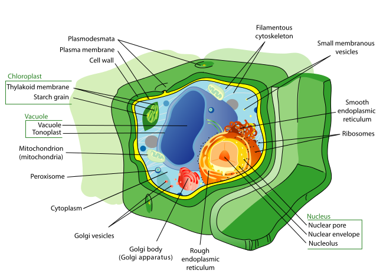
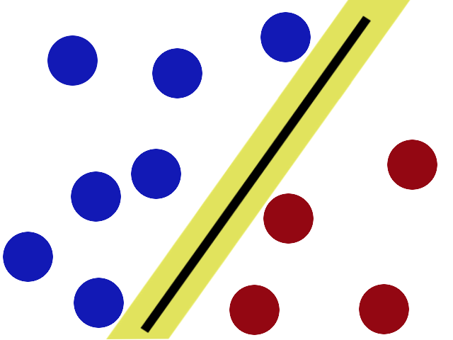
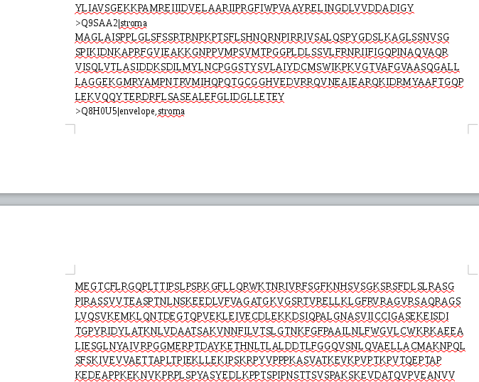
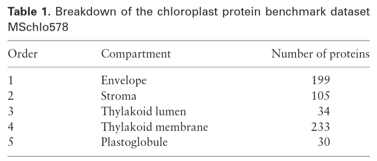
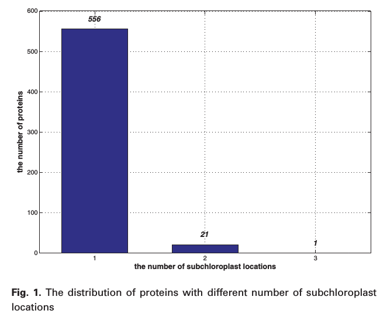
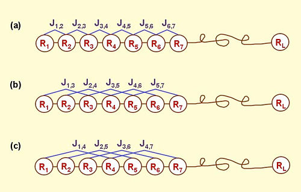
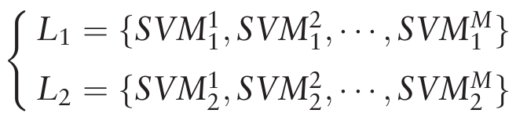
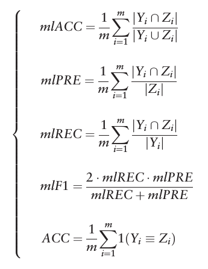

Protein subchloroplast localization prediction: MultiP-SChlo
Michael Carrillo
MultiP-SChlo: multi-Label Protein Subchloroplast Localization Prediction with Chou's Pseudo Amino Acid Composition and a Novel Multi-Label Classifier
Xiao Wang, Weiwei Zhang, Qiuwen Zhang and Guo-Zheng Li
Biological motivation
Plant cell
https://upload.wikimedia.org/wikipedia/commons/thumb/d/d8/Plant_cell_structure-en.svg/1280px-Plant_cell_structure-en.svg.png
Localization is important!
- Several non compatible metabolic reactions happening at the same time
- Proteins do not work alone. They're affected by their environment
- Cell must transport proteins where they're "needed"
How does transportation occur?
Through small sequences in the protein that bind to receptors that guide them
This signals are not static not unique
For investigators is necessary to know where a protein is located to understand the role of the protein in any given process
Biological experiments can be carried out to find biological evidence of these locations. However, they're expensive and not really practical
With expansion of protein sequencing new methods are needed to predict protein localization
Develop computational methods that allow investigators to predict these localizations
Computational context
Statistical classification
Machine Learning development
Identify to which a set of categories a new observation belongs based on a training set of data containing observations whose category membership is known
Examples
- Spam classification
- Fraud detection
- Protein subcellular localization prediction
- Develop mathematical models that can predict categories for new observations
- A training set that is already classified using other methods
- Algorithms do not understand the nature of the problem, they find relations between inputs and output
- Necessity of well distributed, abundant data
Linear regression

https://upload.wikimedia.org/wikipedia/commons/thumb/3/3a/Linear_regression.svg/400px-Linear_regression.svg.png
- A training set
- A mathematical model
- Training data is used to find parameters
- Test how good is the model
- Use it
Models for classification
- Support Vector Machines
- Neural Networks
- Decision Trees
- Regression methods (Linear)
- ...
Support Vector Machines (SVM)
Characteristics of the Classifier
- Non-probabilistic
- Binary
- Linear
- Acts on points in space
Available implementation
LIBSVM
Why this tool?
- Not the first tool available
- More subchloroplast localizations
- Older datasets were too biased
- Older tools were not multi-label
- Specifically constructed for chloroplasts
- UniProtKB/Swiss-Pro has 14408 chloroplast proteins, only 6955 annotated (48%)
Dataset
UniProtKB/Swiss-Prot database (release 2013_05)
- Only annotated (single or multiple) were used
- Ambiguous annotation was removed ('by similarity', 'probable', 'potential')
- Fragments or less than 50 aminoacid proteins were removed
- Proteins with ambiguous letters ('B', 'X', 'Z') were removed
- Reduction of redundancy and homology bias with CD-HIT
MSchlo578 was created with 578 chloroplast proteins
Dataset
Labels and distribution
Labels and distribution
Feature extraction
Let's use the protein sequence
Sequences are not standard not really useful for ML
Amino Acid Composition (AAC)
A vector of 20 positions where each component represents the frequencies of each amino acid
Problem?
Ordering information is lost
Pseudo Amino Acid Composition (PseAAC)
First 20 vectors are AAC
Added ξ * λ components
In this case:
- λ is 50
- ξ is 6
Total of 20 + (50 * 6) = 320 components
Pseudo Amino Acid Composition (PseAAC)
λ has to be less than the length of the minimum sequence. (50)
ξ can be a subset of the following chemical properties:
- Hydrophobicity
- Hydrophilicity
- Mass
- pK (alpha-COOH)
- pk (NH3)
- pI (at 25C°)
Pseudo Amino Acid Composition (PseAAC)
Proposed classifier
SVM based multiple classifier
N = 578, M = 5
How good is this classifier?
Jackknife test
Yi is the true labels for each example, Zi is the predicted set
